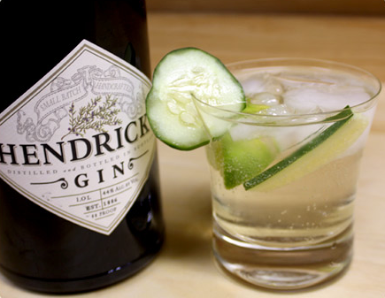
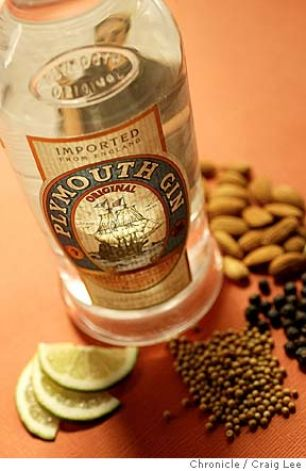

Gin List
Hendrick's Gin
Hendrick's uses Bulgarian rose and cucumber to add flavor. Hendrick's gin is bottled in a dark brown apothecary-style bottle. Hendrick's uses a blend of spirits produced from a Carter-Head Still (constructed in 1948), of which there are only a small number in the world, and a small pot still, originally built in 1860 by Bennett, Sons & Shears. Both have been restored to working order after being bought at auction in the 1960s by current William Grant Life President, Charles Gordon. The two stills produce strikingly different styles of gin due to their different construction and methods of distillation.
Plymouth Gin
Plymouth Original Strength is 41.2% alcohol by volume. It has a distinctively different, slightly less dry flavour than the much more commonly available London Dry Gin, as it contains a higher than usual proportion of root ingredients, which bring a more 'earthy' feel to the gin, as well as a smoother juniper hit. There is also a 'navy strength' variety available which is 57% alcohol by volume (100° English proof), being the traditional strength demanded by the British Royal Navy as this was the proof that would not prevent gunpowder from igniting, should it be compromised by spilled spirit.